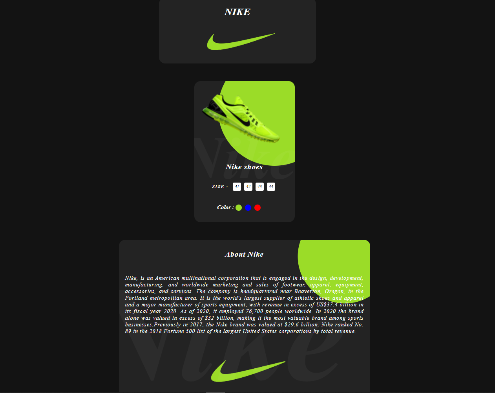
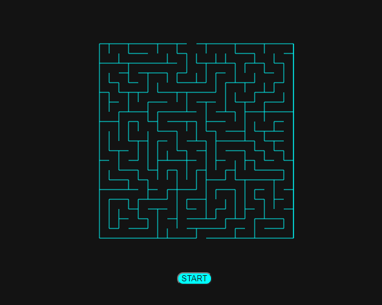
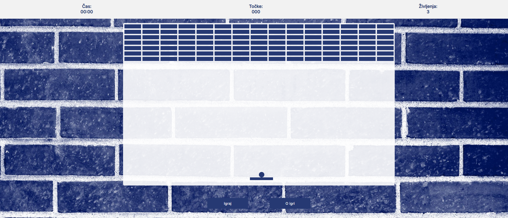

Sem Maj Kravanja, star sem 18 let in živim v vasi Čezsoča blizu Bovca. Sem dijak 4. Letnika Elektrotehniške in računalniške šole v Novi Gorici. Delam v piceriji King Pizza in sem zaposlen kot glavni šef. V prihodnosti upam da mi bo uspelo postaviti picerijo s sobami za prenočišče.
O MENI
PROJEKTI

NIKE
Izdelal sem spletno stran v katero sem vstavil logo nike. Logo sem ustvaril z Bezierjevo krivuljo in z značko svg. https://maj04.github.io/nike/

MAZE
Generiral sem labirint in izrisal pot rešitve. Z gumbom na "start" se labirint reši sam. https://maj04.github.io/maze/

BRICKS
Cilj igre je, da podreš vse bricke in pridobiš vse točke. To narediš tako, da odbijaš žogico s ploščkom. Plošček pa premikaš z levo in desno puščico. https://maj04.github.io/bricks/